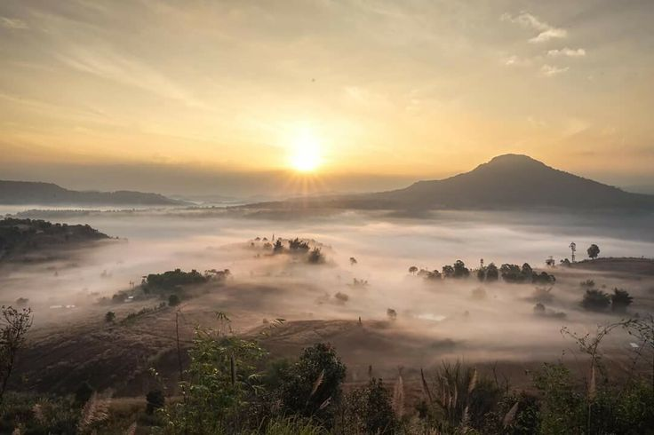

สัมผัสทะเลหมอกและพระอาทิตย์ขึ้น

เขาค้อเป็นสถานที่ที่มีชื่อเสียงเรื่องทะเลหมอก โดยเฉพาะช่วงเช้าที่สามารถชมพระอาทิตย์ขึ้น พร้อมกับทะเลหมอกที่ปกคลุมตามหุบเขา
เป็นจุดที่เหมาะสำหรับการพักผ่อน ถ่ายภาพ และสัมผัสอากาศเย็นท่ามกลางธรรมชาติ